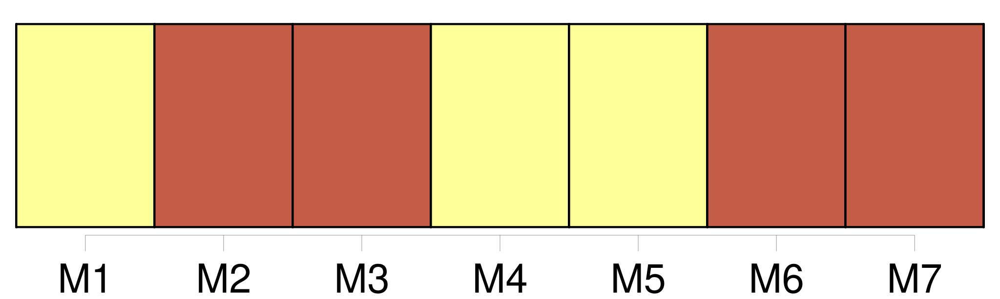

Longueur nb maillons : 278 mentions |
 |
Bien que [le vieux] ait laissé, pour entrer, [ses] sabots à la porte, [son] pas a fait craquer le plancher : l’ enfant commence à geindre. La mère se penche hors de son lit, afin de le rassurer ; et [le grand-père] allume la lampe en tâtonnant, pour que le petit n’ ait pas peur de la nuit. La flamme éclaire la figure rouge [du vieux Jean-Michel] , [sa] barbe blanche et rude, [son] air bourru et [ses] yeux vifs. [Il] vient près du berceau. [Son] manteau sent le mouillé ; [il] traîne en marchant [ses] gros chaussons bleus. Louisa [lui] fait signe de ne pas s’ approcher. [9 phrases] fit [le vieux] , d’ un ton convaincu.
[Il] alla reposer la lampe sur la table. [1 phrases]
[Jean-Michel] la regarda du coin de l’ œil, et [rit] – Tu ne voudrais pas que [je] te dise qu’ il est beau?? Tu ne [me] croirais pas. [2 phrases] L’ enfant sortit de l’ immobilité stupide où le plongeaient la flamme de la lampe et le regard [du vieux] [2 phrases]
Elle [lui] tendit les bras, et dit :
[Le vieux] commença par faire des théories, selon [son] habitude : [1 phrases]
Mais [il] vint, [prit] le petit, et [grogna] : [3 phrases]
[Jean-Michel] retourna près du feu ; [il] se mit à tisonner, d’ un air grognon ; mais un sourire démentait la solennité maussade de [son] visage. – Bonne fille, dit [-il] Va, ne te tourmente pas, [il] a le temps de changer. [2 phrases] [L’ enfant] s’ était apaisé au contact du tiède corps maternel. [1 phrases]
[Jean-Michel] se renversa légèrement dans [sa] chaise, et [répéta] avec emphase :
[Il] se tut un instant, méditant s’ il ne conviendrait pas de développer cette pensée ; mais [il] ne trouva rien de plus à dire ; et, après un silence, [il] reprit d’ un ton irrité : [3 phrases] [Je] viens de passer devant. [1 phrases] – Non, ne l’ [accusez] pas toujours!! [2 phrases]
– Il devrait être rentré, fit [le vieux] , mécontent.
[Il] hésita un instant, puis [demanda] d’ un ton plus bas, un peu honteux : [1 phrases]
– Non, [père] , non, [père] , dit précipitamment Louisa.
[Le vieux] la regarda ; elle évita [son] regard. [3 phrases] cria [le vieillard] , en donnant un coup de pied au foyer. [2 phrases]
– [Père] , je [vous] en prie, dit Louisa, il va pleurer. [1 phrases]
[Jean-Michel] continua d’ une voix plus sourde, avec des éclats de colère : C’ est bien la peine d’ avoir vécu comme [j’] ai vécu, de [m’] être privé de tout!! [5 phrases] – Ne me [grondez] pas encore, je suis déjà si malheureuse!! [1 phrases] Si [vous] saviez comme j’ ai peur, quand je suis seule!! [5 phrases] [Le vieux] s’ inquiéta.
[Il] vint près d’ elle, [ramena] les couvertures défaites sur ses épaules qui tremblaient, et lui [caressa] la tête, de [sa] grosse main : [1 phrases]
– [J’] ai eu tort de vous dire cela.
[Le vieux] la regarda en hochant la tête : [4 phrases] – [Vous] le savez bien.
[Vous -même] , [vous] avez été fâché que je sois devenue sa femme. [2 phrases] [J’] ai été un peu chagrin. Un garçon comme lui, – [je] peux bien le dire sans te blesser, – élevé avec soin, musicien distingué, un véritable artiste, – il aurait pu prétendre à d’ autres partis qu’ à toi, qui n’ avais rien, qui étais d’ une autre classe, et pas même du métier. [1 phrases] – Mais tu sais bien tout de même que [je] ne t’ en ai pas voulu, et que [j’] ai de l’ affection pour toi, depuis que [je] te connais. [1 phrases]
[Il] retourna s’ asseoir, [prit] un temps, et [dit] avec la solennité qu’ [il] apportait à tous [ses] aphorismes :
[Il] attendit un démenti, [cracha] sur le feu ; puis, comme ni la mère ni l’ enfant n’ élevaient d’ objection, [il] voulut continuer, – et se [tut] [1 phrases] [Jean-Michel, près du feu] , Louisa, assise dans son lit, rêvaient tristement tous les deux. [Le vieux] , quoi qu’ [il] eût dit, pensait au mariage de [son] fils, avec amertume. [1 phrases] Elle était domestique, quand elle avait épousé, à la surprise de tous, et surtout à la sienne, Melchior Krafft, le fils de [Jean-Michel] Les Krafft étaient sans fortune, mais considérés dans la petite ville rhénane, où [le vieux] s’ était établi, il y avait presque un demi-siècle. [1 phrases] Melchior était violon au Hof-Theater ; et [Jean-Michel] avait dirigé naguère les concerts du grand-duc. [Le vieillard] fut profondément humilié du mariage de Melchior ; [il] bâtissait de grands espoirs sur [son] fils ; [il] eût voulu en faire l’ homme éminent qu’ [il] n’ avait pu être [lui -même] Ce coup de tête ruinait [ses] ambitions. Aussi avait [-il] tempêté d’ abord et couvert de malédictions Melchior et Louisa.
Mais, comme [il] était [un brave homme] , [il] avait pardonné à [sa] bru, dès qu’ [il] avait appris à la mieux connaître ; et même, [il] s’ était pris pour elle d’ une affection paternelle, qui se traduisait le plus souvent par des rebuffades. [2 phrases] Rien en elle n’ était fait pour séduire : elle était petite, pâlotte et frêle ; et elle faisait un singulier contraste avec Melchior et [Jean-Michel] , tous deux hauts et larges, des colosses à la figure rouge, au poing solide, mangeant bien, buvant sec, aimant rire, et faisant grand bruit. [24 phrases]
La voix de Louisa arracha [le vieux Jean-Michel] à la torpeur où [il] s’ abandonnait devant le feu, en pensant aux tristesses présentes et passées. – [Père] , il doit être tard, disait affectueusement la jeune femme.
Il faut rentrer chez [vous] , [vous] avez loin à aller.
– [J’] attends Melchior, répondit [le vieillard]
– Non, je [vous] en prie, j’ aime mieux que [vous] ne restiez pas. [1 phrases]
[Le vieux] leva la tête, et la [regarda] attentivement. [1 phrases]
[Il] reprit : – Eh bien, oui : cela ne servirait qu’ à gâter encore les choses : [vous] vous fâcheriez ; je ne veux pas.
Je [vous] en prie!
[Le vieux] soupira, se [leva] et [dit] : [Il] vint près d’ elle, lui [effleura] le front de [sa] barbe râpeuse ; [il] demanda si elle n’ avait besoin de rien, [baissa] la lumière de la lampe, et [partit] en heurtant les chaises, dans l’ obscurité de la chambre.
Mais il n’ était pas dans l’ escalier qu’ [il] songeait à [son] fils revenant ivre ; et [il] s’ arrêtait à chaque marche ; [il] imaginait mille dangers à le laisser rentrer seul … [37 phrases] Pendant ce temps, [le vieux Jean-Michel] attendait devant la maison, sous la pluie, la barbe mouillée de brouillard. [Il] attendait que [son] misérable fils revînt ; car [sa] tête, qui travaillait toujours, ne cessait de [lui] raconter des histoires tragiques, amenées par l’ ivresse ; et, bien qu’ [il] n’ y crût pas, [il] n’ aurait pu dormir une minute, cette nuit, s’ [il] s’ en était allé sans l’ avoir vu rentrer. Le chant des cloches [le] rendait très triste ; car [il] se rappelait [ses] espérances déçues. [Il] pensait à ce qu’ il faisait là, à cette heure, dans la rue.
Et, de honte, [il] pleurait. [101 phrases]
… [5 phrases] La vieille Lina, la voisine, assise à côté de lui, a pris un air méchant ; à des moments, il ne reconnaît même plus [son grand-père] [2 phrases]
Il se balance, il se tord le cou pour regarder au plafond, il fait des grimaces, il tire [grand-père] par [son] habit, il étudie les pailles de sa chaise, il tâche d’ y faire un trou avec ses doigts, il écoute les cris d’ oiseaux, il bâille à se décrocher la mâchoire. [9 phrases] [Grand-père] est mécontent de lui. [66 phrases]
Il retirait son fouet de temps en temps, très ému, s’ imaginant que la corde était plus lourde cette fois, et qu’ il allait ramener un trésor, ainsi que dans une histoire contée par [grand-père] … [7 phrases] [Grand-père] le prenait souvent avec [lui] , dans [ses] promenades du soir. Le petit trottinait à [ses] côtés, en [lui] donnant la main. [3 phrases] [Grand-père] toussotait. [1 phrases] [Le vieux] brûlait d’ envie de raconter une histoire ; mais [il] voulait que l’ enfant la [lui] demandât. [2 phrases] [Le vieux] avait une immense affection pour [son] petit-fils ; et ce [lui] était une joie de trouver en lui un public complaisant. [Il] aimait à conter des épisodes de [sa] vie, ou l’ histoire des grands hommes antiques et modernes. [Sa] voix devenait alors emphatique et émue ; elle tremblait d’ un plaisir enfantin, qu’ [il] tâchait de refouler. On sentait qu’ [il] s’ écoutait avec ravissement. Par malheur, les mots [lui] manquaient, au moment de parler. C’ était un désappointement qui [lui] était coutumier : car [il] se renouvelait aussi souvent que [ses] élans d’ éloquence.
Et comme [il] l’ oubliait après chaque tentative, [il] ne parvenait pas à en prendre son parti. [Il] parlait de Régulus, d’ Arminius, des chasseurs de Lützow, de Kœrner et de Frédéric Stabs, celui qui voulait tuer l’ empereur Napoléon. [1 phrases] [Il] disait des mots historiques, d’ un ton si solennel qu’ [il] devenait impossible de les comprendre ; et [il] croyait d’ un grand art de faire languir l’ auditoire aux moments palpitants : [il] s’ arrêtait, [feignait] de s’ étrangler, se [mouchait] bruyamment ; et [son] cœur jubilait, quand le petit demandait, d’ une voix étranglée d’ impatience : « Et puis, [grand-père] ??
» – Mais pour l’ instant, il est tout livré au pouvoir [du conteur] [1 phrases] Il ne savait pas trop de qui il s’ agissait, ni où, ni quand ces exploits se passaient, si [grand-père] connaissait Arminius, et si Régulus n’ était pas, – Dieu sait pourquoi?? [1 phrases]
Mais son cœur et celui [du vieux] se dilataient d’ orgueil au récit des actes héroïques, comme si c’ étaient eux -mêmes qui les avaient accomplis : car [le vieux] et l’ enfant étaient aussi enfants [l’ un] que l’ autre. Christophe était moins heureux, quand [grand-père] plaçait au moment pathétique un de [ses] discours rentrés qui lui tenaient à cœur. [1 phrases] [Grand-père] ne redoutait pas la critique de [son] jeune public, et [il] s’ abandonnait à [son] emphase ordinaire ; [il] ne craignait pas de répéter les mêmes termes, de ne pas finir les phrases, ou même, quand [il] était perdu au milieu de [son] discours, de dire tout ce qui [lui] passait par la tête, pour boucher les trous de [sa] pensée ; et [il] ponctuait [ses] mots, afin de leur donner plus de force, par des gestes à contresens.
Le petit écoutait avec un profond respect ; et il pensait que [grand-père] était très éloquent, mais un peu ennuyeux. Ils aimaient [l’ un] et l’ autre à revenir souvent sur la légende fabuleuse de ce conquérant corse qui avait pris l’ Europe. [Grand-père] l’ avait connu. [Il] avait failli se battre contre lui. Mais [il] savait reconnaître la grandeur de [ses] adversaires ; [il] l’ avait dit vingt fois : [il] eût donné un de [ses] bras, pour qu’ un tel homme fût né de ce côté du Rhin. Le sort l’ avait voulu autrement : [il] l’ admirait, et [il] l’ avait combattu, – c’ est-à-dire qu’ [il] avait été sur le point de le combattre. [1 phrases] » En vain, racontait [grand-père] , avait [-il] tâché de rallier les fuyards ; [il] s’ était jeté devant eux, menaçant et pleurant ; [il] avait été entraîné par leur flot, et [il] s’ était retrouvé le lendemain à une distance surprenante du champ de bataille : – c’ est ainsi qu’ [il] appelait le lieu de déroute. [3 phrases]
[Grand-père] y ajoutait un peu, pour embellir l’ histoire ; il conquérait l’ Espagne, et presque l’ Angleterre, qu’ il ne pouvait souffrir. Il arrivait que [le vieux Krafft] entremêlât [ses] récits enthousiastes d’ apostrophes indignées à l’ adresse de [son] héros. Le patriote se réveillait en [lui] , et peut-être davantage au moment des défaites de l’ Empereur que de la bataille d’ Iéna. [Il] s’ interrompait pour montrer le poing au fleuve, cracher avec mépris, et proférer des injures nobles, – [il] ne s’ abaissait pas aux autres. – [Il] l’ appelait : scélérat, bête féroce, homme sans moralité. [1 phrases]
» Mais [le vieux] était loin de se douter des pensées qui trottinaient à [ses] côtés. Ils se taisaient tous deux, ruminant, chacun à sa façon, ces histoires admirables ; – à moins que, sur le chemin, [grand-père] ne rencontrât un de [ses] nobles clients, faisant une promenade. [Il] s’ arrêtait alors indéfiniment, [saluait] très bas, et [prodiguait] les formules d’ obséquieuse politesse. [1 phrases]
Mais [grand-père] avait au fond du cœur le respect des puissances établies, des personnes « arrivées » ; et il était possible qu’ [il] n’ aimât tant les héros dont [il] contait l’ histoire, que parce qu’ [il] voyait en eux des gens mieux arrivés, et plus haut que les autres. Quand il faisait très chaud, [le vieux Krafft] s’ asseyait sous un arbre, et [il] ne tardait pas à faire un petit somme. Alors Christophe s’ asseyait près de [lui] , sur un talus de pierres branlantes, sur une borne, ou sur quelque haut siège bizarre et incommode ; et il balançait ses petites jambes, en chantonnant et en rêvassant. [2 phrases] Il lui semblait qu’ ils tenaient une place énorme dans la vie ; et il était surpris que [son grand-père] et sa mère n’ y fissent pas attention. [14 phrases] [Grand-père] dormait trop longtemps quelquefois ; [son] visage devenait rigide, [son] long nez se tirait, [sa] bouche s’ ouvrait en long. Christophe [le] regardait avec inquiétude et craignait de voir [sa] tête se changer en une forme fantastique. Il chantait plus fort pour [le] réveiller, ou il se laissait dégringoler à grand fracas de son talus de pierres. Un jour, il inventa de [lui] jeter à la figure quelques aiguilles de pin, et de [lui] dire qu’ elles étaient tombées de l’ arbre. [Le vieux] le crut : cela fit bien rire Christophe. Mais il eut la mauvaise idée de recommencer ; et, juste au moment où il levait la main, il vit les yeux de [grand-père] qui le regardaient.
Ce fut une méchante affaire : [le vieux] était solennel et n’ [admettait] point la raillerie sur le respect qu’ on [lui] devait ; ils restèrent en froid pendant plus d’ une semaine. [6 phrases] Il connaissait [grand-père] [3 phrases] [Grand-père] et l’ homme causaient, sans s’ occuper de lui. [4 phrases] Il pinçait [son grand-père] pour les [lui] faire remarquer. Mais [grand-père] ne s’ y intéressait pas. [Il] repoussait Christophe, en lui disant de [le] laisser tranquille. [8 phrases] Il y en eut une surtout qui lui parut si belle qu’ il voulut attirer l’ attention de [grand-père] [2 phrases] Il la recommença, sur un ton au-dessus, – puis encore une fois, à tue-tête, – tant que [le vieux Jean-Michel] lui dit avec irritation : « Mais à la fin, tais -toi!! [10 phrases] Il n’ aurait pas couru après, comme il faisait après l’ ombre de [grand-père] , pour [lui] marcher sur la tête et piétiner dessus. [3 phrases]
» [2 phrases] Il lui semblait qu’ ils étaient fâchés [l’ un] contre l’ autre, et il craignait qu’ ils n’ en vinssent aux coups. [8 phrases] il va tuer [grand-père] …… [3 phrases] [Grand-père] descendait d’ abord. Le paysan [lui] tendait le petit garçon. [41 phrases] Les récits de [grand-père] , les figures héroïques flottent dans la nuit heureuse …… |

|
Il est possible de télécharger la ressource sur la page Ortolang |
Si vous avez des questions ou vous voyez des erreurs, merci d'envoyer un mail à silvia.federzoni89@gmail.com |